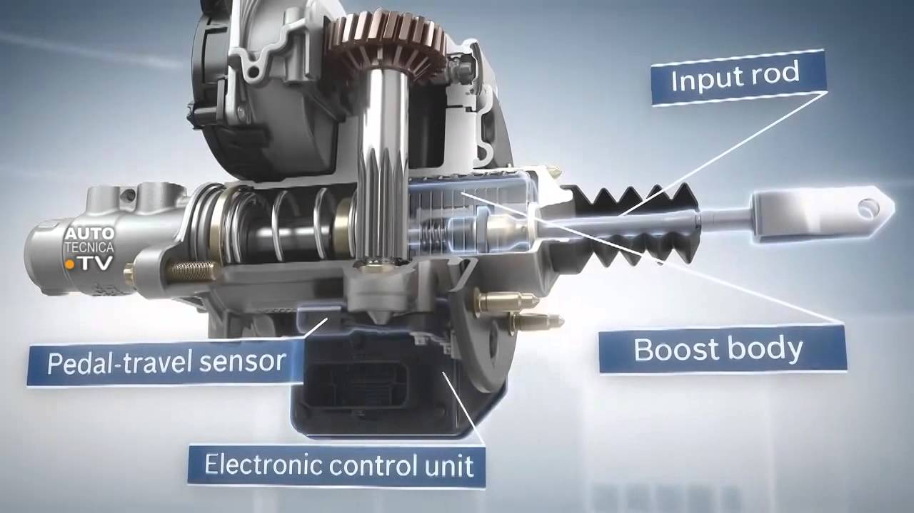

COMPONENTES IMPOTANTES
Acelerador
El acelerador (throttle en inglés) es un mecanismo usado en los motores de combustión interna de ciclo Otto mediante el cual se regula el flujo de la mezcla aire/combustible en el caso de motores de carburador o del aire en los motores de inyección de combustible por medio de constricción y obstrucción del conducto de admisión.
La variación en el llenado del cilindro que se obtiene de esta manera, permite regular la masa de mezcla introducida en el cilindro en el proceso de renovación de la carga del mismo. Esta variable determina, por tanto, la fuerza de la carrera de expansión y, finalmente, el par motor en cada ciclo útil.

PARTES DE UN VEHICULO
Embgrage
El embrague es un sistema que permite tanto transmitir como interrumpir la transmisión de una energía mecánica a su acción final de manera voluntaria. En un automóvil, por ejemplo, permite al conductor controlar la transmisión del par motor desde el motor hacia las ruedas.
Esto se entiende fácilmente si se imagina intentando subir una cuesta muy pronunciada, hasta el punto de hacer "patinar" el embrague durante un período prolongado: de esta manera se obtiene el par que el motor no puede dar, mediante reducción de su régimen al entrar la fuerza al cambio.
